Subsections
Consider the vector-valued model problem in a Lipschitz domain
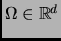,  :
:
 |
(1) |
with right hand side
 .
.
We assume a homogeneous Dirichlet boundary condition on the tangential trace
on the boundary
 of
of  .
.
The coefficient 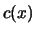 is assumed to be bounded and uniform positive definite.
This type of problem typically arises in particular settings of
Maxwell`s equations. The boundary condition (2) then applies to a perfectly conducting boundary.
For a derivation of the model problem (1), refer to Appendix B.
The subject of this section is to give an appropriate setting for a variational formulation of (1).
A more detailed treatment of the following notions and proofs can be found in [4].
CONVENTION 1
In the following, the vector

will denote the unit tangent vector w. r. t. an edge of a triangle or quadrilateral,
oriented counterclockwise with respect to the corresponding triangle or quadrilateral.
(In 3d, the considered triangles or quadrilaterals will always be faces of a polyhedron, and the counterclockwise orientation has to be
understood as induced by "outward unit normal of the face, plus right hand rule" ).
Let us first consider the case of  . For
. For
![$ \underline v = \left(\begin{array}{c} v_1(x,y) \\ v_2(x,y)\end{array} \right) \in [\mathcal{D}(\overline{\Omega })]^2$](img14.gif) and
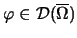 we define the scalar- and the
vector-valued curl-operators:
and
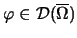 we define the scalar- and the
vector-valued curl-operators:
We note that the
-operator in two dimensions has to be understood as
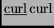.
REMARK 1
In the two dimensional case, the

operator is simply the divergence of the rotated field

. Similarly, the
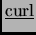 operator is
the rotated gradient field of . Setting
we have
and
We further note that the tangential vector
is just the rotated outward unit normal vector
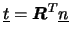. This will enable us to derive statements for the
-operators in two dimensions from statements for the
divergence and gradient operators in two dimensions.
For the case of  and a vector field
and a vector field
![$ \underline v \in [\mathcal{D}(\overline{\Omega })]^3$](img28.gif) we write
we write
DEFINITION 1
For
we write

if
and

if
, and we define
 endowed with the inner product
is a Hilbert space.
endowed with the inner product
is a Hilbert space.
The space
will be the appropriate Sobolev space for a weak formulation of the model problem.
In this section we provide a notion of trace of a
-function onto the boundary
and we define intergation by parts on the
space
.
THEOREM 1 (Approximation Property)
For
,
![$ [\mathcal{D}(\overline{\Omega })]^d$](img34.gif)
is dense in
.
See [4] p.13, p.20 for the proof in the 2d-case and p.20 for a reference to the proof in 3d proposed in Duvaut & Lions, 1971.
Equipped with this approximation property of smooth functions to elements of
, we can state
THEOREM 2 (Green's Formula)
For the 2d case, let

be in
and be a test function in

. We have
For the 3d case, let
be in
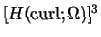 and
be a test function in
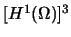. We then have
The boundary integrals are understood as duality pairings in
![$ [H^{-\frac{1}{2}}(\partial \Omega )]^{\tilde{d}} \times H^{\frac{1}{2}}(\partial \Omega )$](img42.gif)
.
PROOF. For smooth functions, it is easy to see that the above Green's formula holds. In the 2d case this follows just
from Gauss' divergence theorem and remark 1.
For the 3d case we use the identity
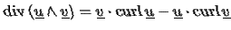
together with Gauss' Divergence Theorem and the properties of the mixed product
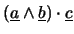 to obtain
The extention to a pairing of
 and
functions follows with Theorem 1 by a density argument and is a result of the proof of the
Trace Theorem. See [4] p.21 for details.
and
functions follows with Theorem 1 by a density argument and is a result of the proof of the
Trace Theorem. See [4] p.21 for details.
THEOREM 3 (Trace Theorem)
For
, let
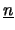 denote the outward unit normal to the boundary
. For
, let
be as in convention
1
For
the mapping
and for
the mapping
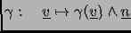
is contiuous and linear from
to
![$ [H^{-\frac{1}{2}}(\partial \Omega )]^{\tilde{d}}$](img50.gif)
.
Note, that the trace of a
-function is only defined in tangential direction. Its trace is in the dual space
of traces of
![$ [H^1(\Omega )]^{\tilde{d}}$](img51.gif) functions. Recall that traces of such functions
are defined in every direction and are functions in
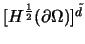.
functions. Recall that traces of such functions
are defined in every direction and are functions in
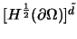.
PROOF.
The proof of the trace theorem follows from Green's formula stated in theorem 2 applied to smooth functions
and then by density arguments. See [4] p.21 for details.
Due to the Trace Theorem it makes sense to define a space of
-functions with vanishing tangential components on the boundary.
REMARK 2
For
,
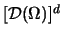 is dense in

.
A consequence of Green's formula is the following important regularity property of
-functions:
PROPOSITION 1
Let

and

be two polygonal (resp. polyhedral) Lipschitz domains in
, with a common edge (resp. common edge or face)

and
denote by

their union. A function is in
if and only if the restricion 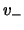 of to
is in
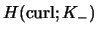, the restricion 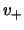 of to
is in
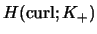
and the
tangential jump over

vanishes:

on
.
PROOF.
The proposition follows from choosing an appropriate test function and integrating by parts (global and local).
In order to localise the result of the Trace Theorem, we must choose a testfunction from the space
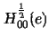. These
functions vanish at the endpoints of and can therefore be extended by zero to a
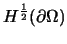-function. From the comparison
of local (on and separately) and global (on ) integration by parts it followas then that the tangential jump vanishes in the
dual space of
. By densitiy properties of
it follows that the tangential traces vanish in
the "correct space" as well. The "correct space" would be
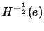 if we have no further regularity of
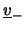 and
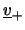, and it
would be 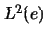 if
is elementwise in 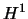 (e. g. for piecewise polynomial
).
In the previous sections we introduced the space
, an integration-by-parts formula and the notion of trace for an
-function. In this framework, the variational formulation of the model problem (1) reads:
- Find
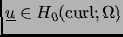 such that for all test functions
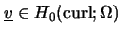 holds
With our assumptions on the data, the forms
are continuous and the bilinear form
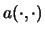 is coercive on
 . By the Lax-Milgram lemma it follows, that there exists a unique solution
of (3).
. By the Lax-Milgram lemma it follows, that there exists a unique solution
of (3).
2003-04-30